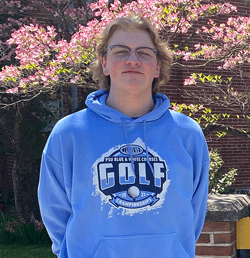

Kyle Beward's e-Portfolio for AENG 110 |
||
| Home Print Project Photography Project Video Project Infographic Project | ||
|

Student at Millersville University
|
My name is Kyle Beward and I am a freshman at Millersville University. I am majoring in Technology and Engineering Education with the goal of becoming a Tech Ed teacher in a middle or high school within central Pennsylvania. I grew up in Middleburg, Pennsylvania which is a small rural town approximately 90 miles northwest of Millersville. In high school, I was a 4-year varsity athlete on the golf and bowling teams, a District IV champion in golf, and an Eagle Scout. In my senior year of high school, I attended a local technology institute and studied HVAC. Although I found it interesting and it is a skill I can definitely use in the future, I decided it was not what I wanted to do for a career. On campus, I am a member of the Technology & Engineering Education Association (TEECA) which is a STEM based organization that provides networking and leadership experiences. The organization also attends conferences and competitions throughout the year. I also work part time for a contractor doing renovation work. In my spare time, I continue to golf and currently volunteer at Crossgates, the golf course right beside the University. I also enjoy hunting and fishing and spend a lot of my time outdoors, especially on the weekends. Between the golf course and the woods, that is where you will usually find me. |
|
| Home Print Project Photography Project Video Project Infographic Project | ||
© 2024 Kyle Beward | ||